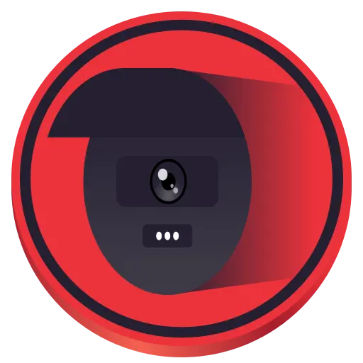

Projects
What I lead, what I contribute to, and the tools I've built and shared
What I lead & build
Where I drive the direction — the projects I'm proudest of and actively working on

Security Research — TechTransThai ส่งเสริมเทคโนโลยีที่ปลอดภัย — leading the campaign to strengthen Thailand's cybersecurity, fix data leaks at the source, and compete in CTFs Leadertechtransthai.org Wonderful Mobile
The mobile-development arm of TechTransThai — building Android kernels and custom ROM / modding projects
Lead maintainergithub.com/wonderful-mobile
Wonderful Mobile
The mobile-development arm of TechTransThai — building Android kernels and custom ROM / modding projects
Lead maintainergithub.com/wonderful-mobile
 Wonderful Kernel — Galaxy A23 5G
Core maintainer for Wonderful Mobile's official Samsung Galaxy A23 5G (a23xq) kernel
Maintainerwonderful-mobile/android_kernel_samsung_a23xq
Wonderful Kernel — Galaxy A23 5G
Core maintainer for Wonderful Mobile's official Samsung Galaxy A23 5G (a23xq) kernel
Maintainerwonderful-mobile/android_kernel_samsung_a23xq
 TomYum-OSS
Open-source osu! bancho server in C# / .NET 10 for both osu!stable and osu!lazer: multiplayer, Relax & Autopilot leaderboards, plugins, and horizontal scaling. Powers somtum.fun in production
Creator & maintainersomtum-fun/TomYum-OSS
TomYum-OSS
Open-source osu! bancho server in C# / .NET 10 for both osu!stable and osu!lazer: multiplayer, Relax & Autopilot leaderboards, plugins, and horizontal scaling. Powers somtum.fun in production
Creator & maintainersomtum-fun/TomYum-OSS
Code contributions
Repos I contribute to
My working repos
Tools and security research I built and wanted to share